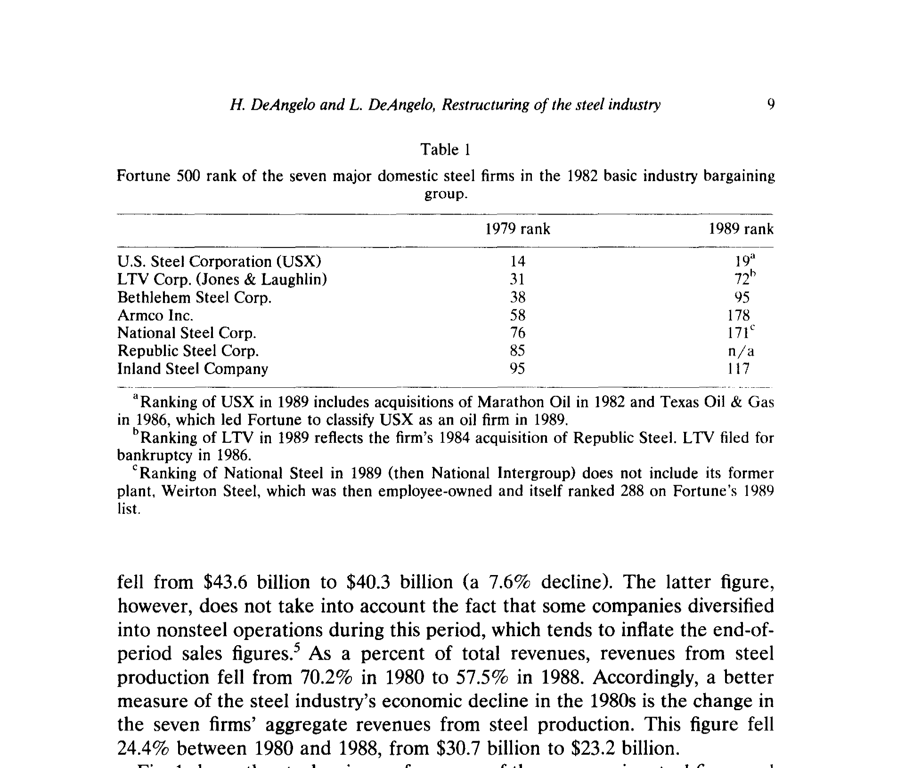
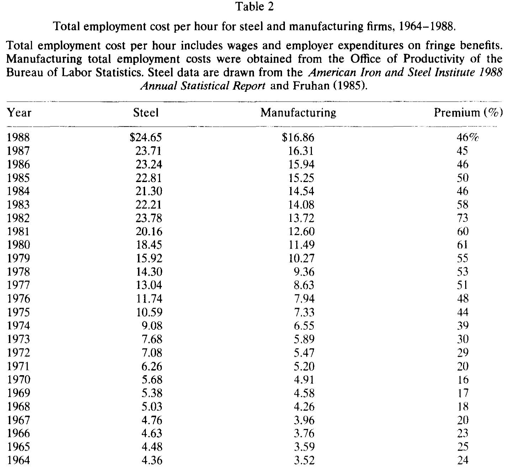
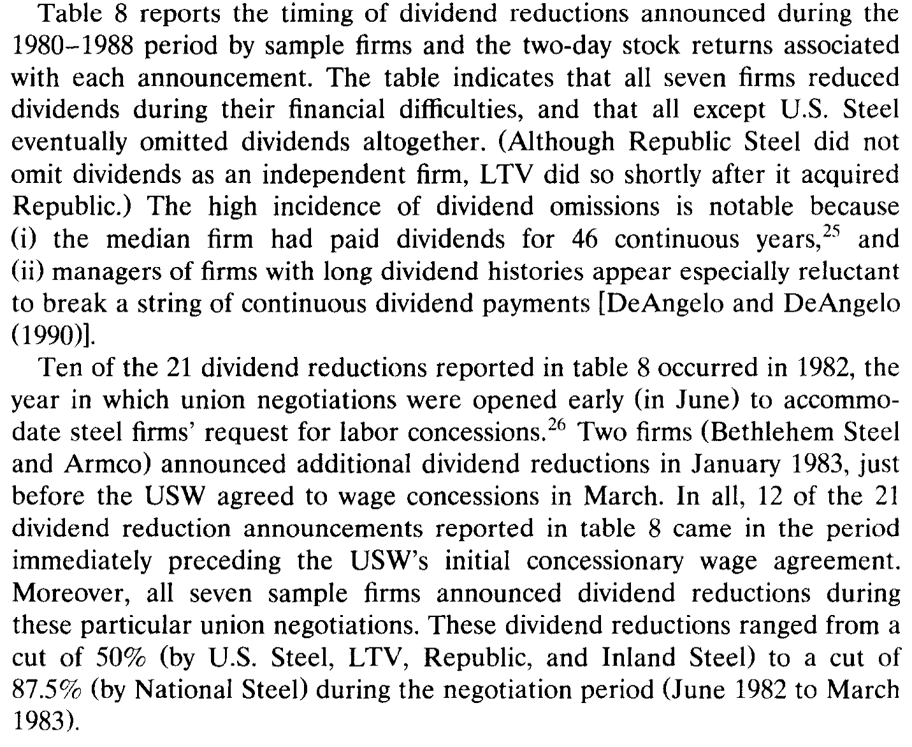
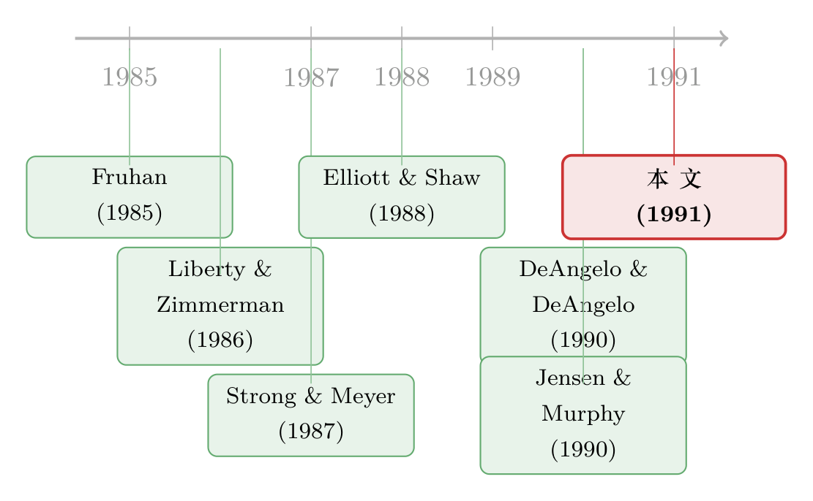

把所有人都拉下水：一场钢铁业大裁员里，公司政策如何为「逼工会让步」而合谋
本文读的是 DeAngelo & DeAngelo (1991, JFE)：在 1980 年代美国钢铁业向工会索要让步的那几年里，七大钢厂的管理层并不是孤立地砍工资、报亏损、降薪、停股利——这些决策被同时、有意地摆上谈判桌，目的只有一个，就是让「公司真的撑不下去了」这句话变得可信，从而逼工会交出工资让步 (wage concessions)。控制了现金流之后，谈判年份的报告利润显著更低，CEO 的工资加奖金平均下降 18.1%，股利被六家公司直接清零。
1 引言：我们一直在用错误的方式看「公司政策」
打开任何一本公司金融的教科书，你会发现我们研究公司决策的方式几乎是「切片式」的：研究股利的人只盯着股利，研究高管薪酬的人只盯着薪酬，研究会计选择的人只盯着报表里的那些计提与冲销。每一篇文章都在问同一个问题——这一个决策，是如何被公司的业绩决定的？
这当然没错，但它漏掉了一件更要紧的事。
真正在公司里坐过的人都知道，这些决策从来不是各管各的。降不降股利、给不给 CEO 发奖金、今年要不要把那块亏损的资产一笔冲掉——它们往往出自同一拨人、同一个会议室、同一套整体战略。于是一个自然的问题是：这些看似独立的决策，会不会其实是被「拧」在一起、服务于同一个目的的？ 如果是，那个目的又是什么？
这正是 DeAngelo 夫妇这篇 1991 年的 JFE 想回答的问题。他们的回答听上去几乎有点「政治」：在特定的情境下，公司政策不只是技术与市场基本面的产物，它还是一种策略性的契约工具 (strategic contracting)——管理层会主动调度它们，去影响一场谈判的结果。
而他们找到的那个「情境」，堪称完美：1980 年代向工会索要让步的美国钢铁工业。
2 一个快要沉的行业，和一群必须把船凿穿的船长
要理解这篇文章，得先理解钢铁业当时有多惨。
1980 年代的美国钢铁业，几乎是被三股力量同时按在地上摩擦的：补贴过的进口钢、用废钢炼钢且不用工会工人的小钢厂 (mini-mills)、再加上一场全球衰退带来的需求萎缩。结果就是灾难性的产能过剩。1982 年，整个行业亏了 $3.2 billion——这是大萧条以来的第一次全行业亏损；紧接着 1983–1986 年，七大一体化钢厂又亏掉了 $9.5 billion。那一年钢产量跌到 1946 年以来最低，七大厂的产能利用率只有 48.1%，而钢铁的盈亏平衡点估计要 80–85% 的产能。
更要命的是成本端。到 1982 年，美国钢铁工人每小时的工资加福利已经逼近 $24，比日本工人高出 60% 还多——可日本工人的生产率还是美国的两倍。本文还算了一笔账：美国钢铁工人相对其他制造业工人的薪酬溢价，从 1964 年的 24% 一路涨到 1982 年的 73%。难道钢铁工作的危险程度在十八年里翻了三倍？显然不是。这笔溢价是历史谈判一层层垒上去的，尤其是 1973 年那份「实验性谈判协议 (Experimental Negotiation Agreement, ENA)」许下的最低 3% 年涨薪和自动通胀挂钩。
现在，把管理层的处境想象成一个再清楚不过的困境：维持现状会被高人工成本拖死，而想退出又退不起。 因为根据和美国钢铁工人联合会 (United Steelworkers of America, USW) 的既有协议，关一座厂、裁一个人的总成本（遣散、养老、医保等）高达每人 $60,000–$70,000。正如 Fruhan (1985) 那句被本文引用的话：一家钢铁公司想关厂，它要背上的未提存养老与医保负债，往往远超这座厂连同营运资本的清算价值。
所以管理层唯一的出路，是坐到谈判桌前，向工会要回让步——降薪、砍福利、放松那些昂贵的条款。这条路他们最终走通了：1983 年拿到一份小时工资降 9%、估计当年省下 $15–20 亿 的协议；1986–1987 年那个持续了 30 年的行业统一谈判组干脆解体，各家分头谈判，U.S. Steel 还挨了一场行业史上最长的罢工。

Figure 1: shows the stock price performance of the seven major steel firms and
如图 1 所示，钢铁股在 1984 年之前还能跟住大盘，之后就一路掉队：到 1988 年底，七大钢厂的累计股票回报只有 25.3%，而同期 CRSP 市值加权指数是 157.3%。这是一个货真价实地在衰退的行业。
3 真正关键的一步：把「谈判年份」当成一把手术刀
到这里，故事还只是一个「惨」字。这篇文章真正聪明的地方，在于它怎么识别出管理层的策略行为。
先说清楚它是什么、不是什么。这不是一篇带着工具变量或断点的因果识别论文，而是一项临床式的行业内研究 (clinical study)——把整个分析锁在一个行业、七家公司身上，从而把跨行业、跨公司的那一大堆混杂因素自然地按住。它的「识别」靠的是一个干净的时间维度：谈判年份 vs. 非谈判年份。
作者把索要让步的窗口精确地钉了下来：USW 的让步请求集中在两段时间——1982 年 6 月到 1983 年 3 月（所有公司），以及 1986 年 1 月到 1987 年 8 月（各公司日期略有差异）。由于这七家公司当时都按日历年报告盈余，于是与谈判相关的财务数据，对应的就是 1982、1985、1986 这三个「工会谈判年份 (union negotiation years)」。
这一步为什么关键？因为它把一个原本无从下手的命题——「管理层是不是在策略性地操纵公司政策」——转化成了一个可检验的时序假说：如果这些决策真的是为谈判服务的，那它们就应该异常地聚集在 1982、1985、1986 这三个年份，而且这种聚集在控制了真实经营业绩之后依然存在。
换句话说，文章要论证的不是「钢厂亏钱所以降薪停息」（那只是基本面），而是「在亏得差不多的两个年份里，管理层偏偏选在要和工会谈判的那一年，把损失报得更重、把自己的薪水砍得更狠、把股利停得更干脆」。业绩是连续的，但行为是在谈判年份骤然加码的——这个落差，就是策略的指纹。
4 数据
数据是从公开渠道一片一片拼出来的，这本身也是「临床研究」的代价。样本是构成 1982 年基本产业谈判组的七家主要一体化钢厂：U.S. Steel、LTV、Bethlehem、Armco、National Steel、Republic、Inland，它们占了当时国内约三分之二的产能。样本期 1980–1988。
数据来自公司年报、10-K、委托书 (proxy statements)、CRSP 与 Compustat、Moody's、美国钢铁协会的统计年报、标普行业调查以及《华尔街日报》。需要诚实说明的是：由于钢厂并不系统地区分工会/非工会、钢铁/非钢铁员工的工资与雇佣数据，文中很多数字是池化 (pooled) 的公开口径，作者对此毫不掩饰，并用 National Steel 已披露年份做了交叉验证（估计误差在 ±8% 以内）。
5 主要结果：一场五个人一起跳的水
现在来看证据。文章的叙事其实就是把「合谋」的链条一环一环铺开——而每一环，都指向同一个谈判桌。
第一环，也是最重的一环：真刀真枝的裁员与降薪。 要让「我们撑不下去了」可信，最有说服力的证据，是管理层真的关了厂、真的大规模裁了人。这一点钢厂做到了极致：七家公司的总用工从 1979 年的 512,941 人砍到 1988 年的 190,238 人，降幅 62.9%——整整丢掉约 30 万个岗位、近三分之二的劳动力；产能下降 38.2%；总工资支出从 1980 年的约 $16.1 billion 降到 1988 年的约 $8.6 billion，跌了 46.6%。劳动成本占销售额的比重，从 1980 年的平均 36.1% 一路降到 1988 年的 24.6%。这些不是装出来的姿态，而是真实的、以百亿美元计的成本节省。

Table 2
表 2 把这场成本剧变放进了更长的历史背景里：它对照了钢铁业与制造业每小时的总用工成本，让人一眼看清那道在 1960–1970 年代被 ENA 越垒越高、又在 1980 年代被强行压回去的薪酬溢价。
接着，一个自然的问题是：光裁员够不够「可信」？ 不够。管理层还需要佐证——而最方便的佐证，就是账面上的巨亏。于是第二环登场：报告利润在谈判年份系统性地更低，而且控制了现金流之后依然如此。 这一点至关重要，因为它把「真的亏了」和「报得更亏」区分开了。作者发现，谈判年份的亏损主要由一次性特殊计提 (one-time special charges) 驱动——这些计提反映的确实是真实的重组决策（关厂、不再重启已闲置的工厂），但它们的入账时点是可以自由裁量的。而这些冲销，往往被安排在第四季度末，伴随着「我们预计要关停某些产线」的公告——这类公告本可以轻松推到下一个财年。一推一拉之间，亏损就被「挪」进了谈判年份。
这正是「真实重组」与「会计择时」的分水岭。钢厂确实要关厂裁员（真实的），但在哪一年把这笔账记下来是可选的（择时的）。把真实的坏消息，集中倾倒在最需要它的那一年——这就是策略。
然后是第三环：让别的利益相关者陪着一起牺牲。 要说服工会让步，管理层不能只让蓝领流血。于是出现了普遍的白领降薪 (white-collar pay cuts)，其时点设计得像是在对工会喊话：「你看，连管理人员都减了，你们也该跟上。」
第四环，CEO 自己也割肉。 七家公司的高管薪酬全部被砍，且在谈判年份砍得尤其狠。控制了公司业绩之后，CEO 的工资加奖金在谈判年份平均下降 18.1%（而在其他年份平均上涨 19.5%）；薪酬最高的五位高管，工资加奖金在谈判年份平均降 15.4%（其他年份平均涨 16.0%）。但作者很清醒地指出：这些百分比看着吓人，换算成现金流其实小得可怜——和每年数十亿的人工成本节省比，高管那点减薪更像是一种象征性的姿态 (symbolic actions)，传递的信息是「连我也会为公司的困境付出切肤之痛」。管理层在向工会要让步时，确实最爱强调自己的牺牲。
最后一环，反转出现：股利。 股利削减同样是普遍的、且高度集中在谈判年份。六家公司直接清零了股利——而样本里的中位数公司，此前已经连续派息 46 年；第七家也大幅削减。靠停息省下的现金，每年合计数亿美元——不算小数，但和裁员降薪省下的几十亿相比，仍是小巫见大巫。换句话说，停股利在现金意义上几乎是「不划算」的，可它偏偏被做了，而且偏偏挤在谈判年份。 这恰恰说明，它的价值不在省钱，而在传递信号：连最忠诚、派了快半个世纪息的股东都被请去牺牲了，工会还有什么理由不让步？

Table 8: reports the timing of dividend reductions announced during the
如表 8 所示，股利削减公告的时点高度聚集在谈判窗口附近——这种聚集，很难用单纯的基本面恶化来解释，却完全契合「策略性信号」的逻辑。
把五环连起来看，画面就清楚了：裁员降薪是实的（提供可信威胁），冲销报亏、白领与高管减薪、停发股利是虚实交织的信号（让威胁显得无可辩驳）。所有这些决策，被同一拨管理层、为同一个谈判目标，有意地编排在了一起。这，就是本文所说的公司契约过程的「政治观 (political view)」。
6 文献脉络：从「会计选择」到「政治契约」
这篇文章站在两条支流的交汇处。
第一条是会计选择与盈余管理的传统。早就有人怀疑，管理层会择时使用资产冲销来管理外界的认知——Strong & Meyer (1987) 研究资产减记背后的管理层动机与证券回报，Elliott & Shaw (1988) 把冲销看成一种「管理认知」的会计手段，Bowen、Burgstahler & Daley (1986) 则细究了盈余与各种现金流度量之间的关系（这正是本文「控制现金流后利润仍更低」这一检验的方法论根基）。而与本文情境最贴近的，是 Liberty & Zimmerman (1986)——他们直接研究了工会合同谈判与会计选择的关系。本文可以看作对这条线索的一次更系统、更具叙事性的推进：不只是「谈判时会计变保守」，而是「会计、薪酬、股利一起变保守」。

第二条是管理层薪酬与公司财务困境的政治经济学。这一支的两块基石都来自 1990 年。其一是作者自己的 DeAngelo & DeAngelo (1990)——他们研究陷入困境的纽交所公司的股利政策，提出股利削减反映了管理层在困境中调和各方诉求的意图。其二是 Jensen & Murphy (1990a, b)——他们指出，给高管发足够高的绩效薪酬之所以难，恰恰是因为这会引来工人的强烈不满；于是高管、工会与其他利益相关者的报酬被隐性地绑在了一起。本文几乎就是这两块基石在一个具体行业里的实证落地：当 Jensen-Murphy 说的「隐性联结」遇上 DeAngelo 说的「困境中的诉求调和」，钢铁业就给了我们一个能看清全过程的舞台。
把这条脉络放进更近的研究里看，会发现它格外有生命力：劳资谈判作为公司财务的一个驱动力，至今仍是活跃的话题——企业会预先为一场可能的罢工储备财务韧性（关于这一点，可参见《谈判桌上的「耗得起」》），债务本身也会成为老板在谈判桌上压价工资的底牌（参见《债，竟成了老板谈判桌上的底牌》）。而本文关于「股利是调和各方诉求的工具」这一洞见，与 Jensen 自由现金流框架下「现金该不该还给股东」的讨论也遥相呼应（参见《现金为什么一定要「还」出去？》）。
7 评论与延伸（Q&A + 研究方向）
(a) 几个可能的疑问
Q：这到底算因果识别，还是只是把相关性讲得好听？
诚实地说，更接近后者。这是一篇临床/描述性研究，靠「行业内 + 谈判年份 vs 非谈判年份」来排除混杂，而非靠外生冲击。它最有力的论据是「控制现金流后利润仍显著更低」这一类条件比较，但七家公司、三个谈判年份的样本，注定无法给出教科书式的因果证书。它的说服力来自证据的一致性——五种不同决策同时、同向地聚集——而不是单个系数的干净。
Q：报告利润更低，会不会只是因为谈判年份恰好就是亏得最惨的年份？
这正是文章要堵的漏洞，办法就是控制现金流。如果只是真实经营在恶化，现金流会同步反映出来；而文章发现的是：在现金流给定的条件下，报告利润仍然更低，且差额主要来自时点可自由裁量的一次性冲销。真实的坏，被择时地放大了——这才是关键。
Q：高管减薪 18%，听起来很有诚意，可这真的是「牺牲」吗？
文章自己就泼了冷水：换算成现金，高管减薪与每年几十亿的人工节省相比微不足道。它的功能不是省钱，而是象征——一种「我也在流血」的可信信号。把它当成真金白银的让步，就误读了它在谈判博弈里的角色。
Q：六家公司清零股利，难道不就是财务困境下天经地义的保命动作吗？
部分是。但有两点不寻常：一是中位数公司此前已连续派息 46 年，停息的「信号成本」极高；二是停息省下的现金（每年数亿）相对救命所需（每年数十亿）其实有限。一个省钱效果有限、信号成本极高、又精准聚集在谈判年份的动作，用纯粹的流动性保命很难解释，用策略性信号却恰好讲得通。
Q：那有没有可能，这一切只是「钢铁业特例」，换个行业就不成立？
这是最该担心的外部效度问题。钢铁业有几个极端特征：超强的全国性工会、30 年的统一谈判组、天文数字般的退出成本。这些恰恰是让策略行为「显形」的放大器。换到工会弱、退出便宜的行业，同样的合谋未必能被观察到——但这不代表机制不存在，只代表它更隐蔽。
Q：管理层主动给自己降薪、给老股东停息，这不是和「管理层自利」唱反调吗？
不矛盾。Jensen-Murphy 的逻辑是：高管薪酬被工人的反应隐性约束着。在谈判年份压低自己的薪水，换来的是几十亿的工资让步——这对管理层（及股东）其实是划算的自利。短期的象征性牺牲，服务的是长期的契约目标。
(b) 几个可能的研究问题与提案
1. 劳资谈判与公司债定价
【经济故事】既然管理层会在谈判年份策略性地把损失报得更重、把股利停掉，那债权人会怎么反应？工资让步降低了固定成本、提升了长期生存概率，这对信用利差应是利好；但谈判期的报告亏损与停息又像坏消息。两股力量谁主导，是个干净的实证问题。 【可行性】中。需要把工会合同到期/谈判窗口（可从 BLS、公司 10-K、新闻中手工编码）与公司债二级市场价格（TRACE，2002 年后）对齐。难点在于强工会、有债券交易的公司样本不大，且 TRACE 时段与「钢铁式」大谈判已错开——更适合做成跨行业、长面板的设计。
2. 外资持有人会不会「看穿」谈判年份的盈余管理？
【经济故事】本文说谈判年份的亏损是择时做出来的「给工会看」的信号。那不同类型的投资者识别能力是否不同？外资机构（信息劣势/优势众说纷纭）面对这种「为第三方设计的盈余信号」，是被误导而抛售，还是看穿而不动？这能把「盈余管理的受众」这一问题做得更细。 【可行性】中。需要工会谈判窗口 + 机构持仓变动（13F、各国披露）+ 盈余冲销数据。识别上可借「可投资度/外资准入」的制度变化做准自然实验。挑战在于把「谈判信号」与一般盈余管理区分开。
3. 股利作为「多方诉求调和器」的可检验含义
【经济故事】本文与 DeAngelo & DeAngelo (1990) 都暗示，停股利是为了在困境中向各方（尤其工会）传递「大家一起牺牲」。一个直接推论是：工会力量越强、谈判越临近的公司，停息的概率与幅度越大，且对公告日股价的负面冲击越小（因为市场理解这是策略而非纯粹的坏消息）。 【可行性】高。所需数据都较成熟：股利事件（CRSP）、行业工会化率（BLS/Union Membership and Coverage Database）、财务困境度量。可做成大样本面板，用工会化率的横截面异质性来识别。doable。
4. 把「合谋」量化：决策的同步性指数
【经济故事】本文最核心的洞见是「多个决策被拧在一起」。但它主要靠叙事呈现。能不能构造一个公司政策同步性 (policy synchronicity) 指标——把冲销、降薪、停息、白领减薪是否在同一年共同发生编码成一个综合度量——再去检验它是否在谈判年份系统性升高？ 【可行性】中。指标构造需要逐公司逐年手工编码多类决策，工作量大；但一旦建成，可同时用于劳资谈判、并购防御、监管博弈等多种「策略性情境」，复用价值高。
8 我的判断
先说贡献。这篇文章真正的价值，不在任何单个系数，而在视角的转换：它把公司政策从「业绩的被动函数」重新理解为「博弈中的主动工具」，并用一个极端但干净的行业，把「多决策协同」这件平时看不见的事显影了出来。18.1% 的 CEO 减薪、46.6% 的工资削减、六家清零股利——这些数字本身或许会被人遗忘，但「公司政策是政治性的、是被策略地编排的」这个框架，至今仍在影响我们怎么看劳资、看困境、看盈余管理。
再说对识别的担忧。它的软肋也正来自它的方法：七家公司、三个谈判年份，没有真正外生的变异。所谓「控制现金流后利润仍更低」是它最硬的一块证据，但样本太小，使得任何一种「钢铁业碰巧如此」的另类解释都难以被彻底排除。它说服我的方式是证据的合力，而非单点的严谨——读者得接受这种临床研究固有的取舍。
最后说我想看到什么。我最想看到的，是把这套逻辑搬出钢铁业、放进一个大样本里：用工会化率的横截面差异、用可观测的合同到期窗口，去检验「谈判临近 → 盈余更保守、股利更易停、高管象征性减薪」这条链在更广的企业中是否依然成立，以及债权人和不同类型的股东各自如何定价这些「为第三方设计的信号」。如果它在钢铁业之外依然立得住，那这篇 1991 年的临床研究，就不只是一段行业往事，而是一条仍在生长的主线。
参考文献
Bowen, R. M., Burgstahler, D., & Daley, L. A. (1986). Evidence on the relationship between earnings and various measures of cash flow. The Accounting Review 61(4), 713–725.
DeAngelo, H., & DeAngelo, L. (1990). Dividend policy and financial distress: An empirical investigation of troubled NYSE firms. Journal of Finance 45(5), 1415–1431.
DeAngelo, H., & DeAngelo, L. (1991). Union negotiations and corporate policy: A study of labor concessions in the domestic steel industry during the 1980s. Journal of Financial Economics 30(1), 3–43.
Elliott, J. A., & Shaw, W. H. (1988). Write-offs as accounting procedures to manage perceptions. Journal of Accounting Research 26, 91–119.
Fruhan, W. E., Jr. (1985). Management, labor, and the golden goose. Harvard Business Review, Sept.–Oct., 131–141.
Hoerr, J. P. (1988). And the Wolf Finally Came: The Decline of the American Steel Industry. University of Pittsburgh Press.
Jensen, M. C., & Murphy, K. J. (1990a). CEO incentives — It's not how much you pay, but how. Harvard Business Review, May–June, 138–153.
Jensen, M. C., & Murphy, K. J. (1990b). Performance pay and top-management incentives. Journal of Political Economy 98(2), 225–264.
Liberty, S. E., & Zimmerman, J. L. (1986). Labor union contract negotiations and accounting choice. The Accounting Review 61(4), 692–712.
Strong, J. S., & Meyer, J. R. (1987). Asset writedowns: Managerial incentives and security returns. Journal of Finance 42(3), 643–663.